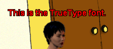

Besides bitmap fonts WME also allows you to use the standard TrueType fonts to display any in-game texts. TrueType fonts are commonly used in the Windows operating systems. All the letters are represented by their vector shape, allowing lossless scaling and antialiasing of letter edges. To allow WME to use a TrueType font you have to write a simple text definition file, which describes which font to use, in what size, and some other properties, such as bold, italic etc.
You can either use one of the standard fonts provided with Windows, such as Arial or Times New Roman, or you can distribute a custom font file (*.ttf) with your game. If you are distributing the ttf file, make sure the file is NOT packed inside the game packages. You have to copy the font file to the game directory, because WME uses Windows functions to render the text and Windows is, naturally, unable to read data from inside WME's packages.
Let's take a look at an example TrueType font definition file. Please note that most of these properties are optional. If you don't provide them, WME uses appropriate defaults:
TTFONT
{
SIZE = 12
FACE = "Arial"
FILENAME = "fonts\arial.ttf"
BOLD = TRUE
ITALIC = FALSE
UNDERLINE = FALSE
STRIKE = FALSE
CHARSET = 1
COLOR { 255, 0, 0 }
ALPHA = 255
LAYER
{
OFFSET_X = 1
OFFSET_Y = 1
COLOR { 0, 0, 0 }
ALPHA = 255
}
LAYER
{
OFFSET_X = -1
OFFSET_Y = -1
COLOR { 0, 0, 0 }
ALPHA = 255
}
LAYER
{
OFFSET_X = -1
OFFSET_Y = 1
COLOR { 0, 0, 0 }
ALPHA = 255
}
LAYER
{
OFFSET_X = 1
OFFSET_Y = -1
COLOR { 0, 0, 0 }
ALPHA = 255
}
LAYER
{
OFFSET_X = 0
OFFSET_Y = 0
COLOR { 255, 0, 0 }
ALPHA = 255
}
}
Description:This is the basic definition. But since fonts in games typically use some sort of dark outline or a shadow to be readable on both dark and light backgrounds, WME allows you to compose the letters out of several "layers". Each layer can use a different color and can be offset by a number of pixels. For example to simulate a black outline, you'd specify four black layers, each shifted by one pixel to the left, right, top and bottom. That's exactly what the above example does. It uses four black layers to form the outline and one red layer for the actual letters.
And this is the resulting font in WME:

Available character sets:
| WME character set number | Description |
| 0 | ANSI characters. |
| 1 | Default charset. Font is chosen based on name and size. If the described font is not available on the system, Windows will substitute another font. |
| 2 | OEM charset. Depends on the codepage of the operating system. |
| 3 | Baltic characters. |
| 4 | Traditional Chinese characters (taiwanese). |
| 5 | Central and eastern european languages. |
| 6 | Simplified Chinese characters (mainland china). |
| 7 | Greek characters. |
| 8 | Korean characters (Wansung). |
| 9 | Macintosh characters. |
| 10 | Cyrillic characters. |
| 11 | Japanese shift-jis characters. |
| 12 | Standard symbol set. |
| 13 | Turkish characters. |
| 14 | Vietnamese characters. |
| 15 | Korean characters (Johab). |
| 16 | Arabic characters. |
| 17 | Hebrew characters. |
| 18 | Thai characters. |